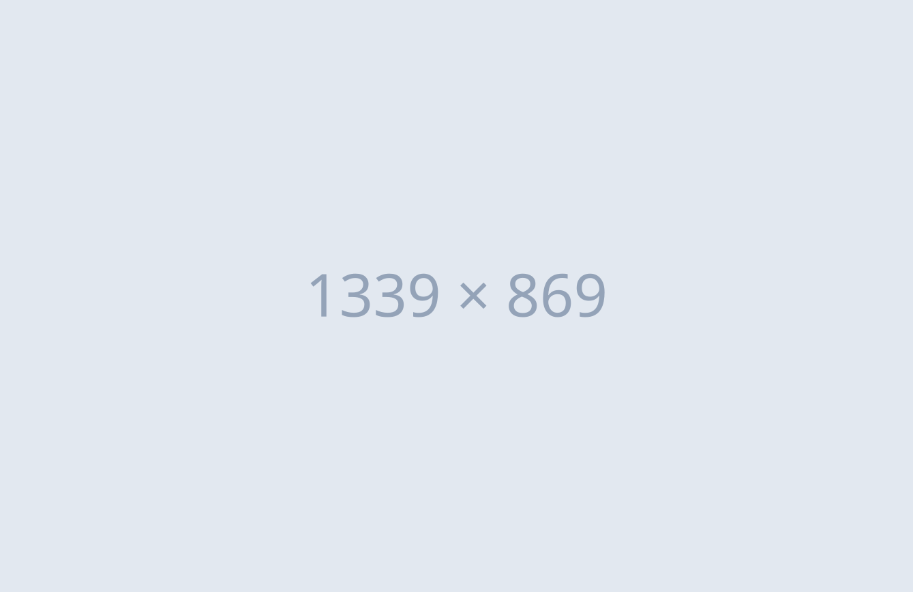

−42% claims cycle timeFeatured Story
Calder Insurance cut claims cycle time by 42% in seven months
4,200 claims staff, eleven handoffs per claim, and a flow the adjusters redesigned themselves in nine workshops.
- Cycle time, from 31
- 18 days
- NPS
- +11 pts
- Run-rate
- $64M